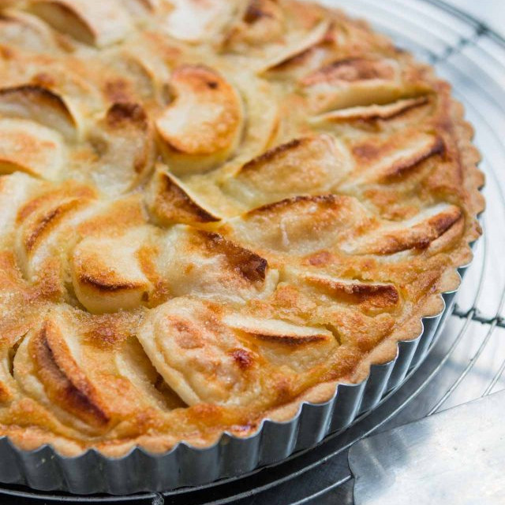

French Apple Tart

Description
This classic French Apple Tart (Tarte aux Pommes) gives you a double dose of apples.
It begins with a pre baked Sweet Pastry Crust (Pate Sucree) which has a wonderfully
crisp texture and a sweet buttery flavor. Next, comes a layer of lightly sweetened
apple sauce that is topped with artfully arranged apples slices.
Ingredients
Pastry:
- 1 ⅓ cups all-purpose flour
- 1 pinch salt
- ½ cup butter, softened
- 1 egg yolk
- 3 tablespoons cold water, or as needed
Frangipane:
- ½ cup butter, softened
- ½ cup white sugar
- 1 egg, beaten
- 1 egg yolk
- 1 tablespoon apple brandy
- ⅔ cup ground almonds
- 2 tablespoons all-purpose flour
- 4 medium sweet apples - peeled, cored, halved and thinly sliced
- 1 tablespoon white sugar for decoration
- ¼ cup apricot jelly
Steps
- In a medium bowl, stir together 1 1/3 cups of flour and salt. Add the butter, 1 egg yolk and water,
and stir until the mixture forms large crumbs. If it is too dry to press a handful together, stir in more water.
Press the dough into a ball, and wrap in plastic wrap. Flatten slightly, and refrigerate for at least
30 minutes, or until firm. This part can be done up to three days in advance.
- To make the frangipane, cream together the butter and 1/2 cup of sugar in a medium bowl until light and soft.
Gradually mix in the egg and the remaining egg yolk one at a time. Stir in the apple brandy. Stir 2
tablespoons of flour into the ground almonds, then mix into the batter. Set aside.
- Roll the pastry dough out to about a 12 inch circle on a lightly floured surface. Fold loosely into quarters,
and center the point in a 10 inch tart or pie pan. Unfold dough, and press into the bottom and up the sides.
Prick with a fork all over, and flute the edges. Return pastry to the refrigerator to chill until firm.
- Preheat the oven to 400 degrees F (200 degrees C). Place a baking sheet inside the oven while it preheats.
- Place the pie plate on top of the baking sheet in the preheated oven. Bake for 15 minutes, or until the filling
begins to brown. Reduce the oven temperature to 350 degrees F (175 degrees C). Bake for another 10 minutes,
then sprinkle sugar over the top of the tart. Return to the oven for 10 more minutes, or until the sugar
caramelizes slightly.
- Cool the tart on a wire rack. A short time before serving, warm the apricot jelly. Add some water if
necessary to make it a liquid consistency. Brush onto the tart for a nice shine.